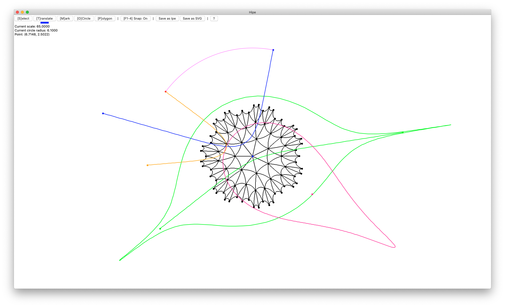

Hipe is a Python tool that visualizes drawings in hyperbolic space using the native representation. Its controls are inspired by Ipe.

Launch the tool by calling python3 Hipe.py
Different ways of manipulating the drawing is split into different modes. A red bar beneath the corresponding button indicates which mode you are in. Each mode can be activated by either pressing the corresponding button or by pressing the key in square brackets.
The select mode is used to select objects and manipulate the selection. The shortcut key is S. The primary selection (red) is the last object selected. Secondary selections are marked purple.
Mouse 1: Selects the object within the selection radius (indicated by a magenta circle) that is closest to the mouse cursor.Shift Mouse 1: Adds to the selection.Space: Pressing space while pressing the mouse button down cycles through the objects within the selection radius. If the object is a circle it will be highlighted in magenta.E: Adds/removes an edge between two selected objects.R: Sets the radii of all selected objects to match the radius of the primary selection.The translate mode is used to translate the primary selection. The shortcut key is T.
Mouse Drag: Moves the primary selection to the current cursor position. Upon further dragging the object follows the mouse cursor.The mark mode is used to add points to the canvas. The shortcut key is M.
Mouse 1: Add a point at the current cursor position..The circle mode is used to add circles to the canvas. The shortcut key is O. A newly added circle will have the current radius, which can be adjusted using the mouse wheel or the + / - keys.
Mouse 1: Add a point at the current cursor position.The polygon mode is used to create polygons, i.e., points (marks) that
are connected by edges, to the canvas. The shortcut key is P.
Mouse 1: Adds a point at the current cursor position. And another point at the same position that will now follow the mouse cursor.Mouse 2: Places the point currently following the mouse and closes the polygon.Shift Mouse 2: Places the point currently following the mouse without closing the polygon.These actions are available in all modes:
G: Add/remove a grid within a circle of the current radius centered at the origin.C: Change the color of selected objects by cycling through [Black, Green, Red, Blue and Orange]D: Clear all, i.e., remove all objects.Mouse wheel / + / -: Change the current radius.Backspace: Delete the currently selected objects.Escape: Clear selection.output will be created where Hipe was launched. The drawing will be saved as SVG or Ipe file using the current timestamp as filename.